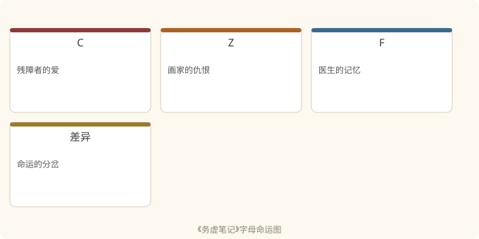

务虚笔记
一、基本信息
| 作者 | 史铁生 |
|---|---|
| 成书/出版 | 1996年（英文维基 B218 口径：Notes on Principles (务虚笔记, 1996)） Shi Tiesheng — Wikipedia (EN)（百科全书） |
| 国别/地区 | 中国 |
| 时代 | 现当代 · 当代 |
| 体裁 | 长篇小说 |
| 语言 | 汉语（白话） |

《务虚笔记》字母命运图（主题·结构图）
二、创作背景
英文维基（B218）：'Notes on Principles (务虚笔记, 1996), a novel viewed as a milestone in Chinese religious-philosophical fiction'（中国宗教哲学小说的里程碑之作）；引 Shelley W. Chan 评价——可与《灵山》比肩甚至'even better'（B218 转引）。
文体（通说）：以字母人物（C、Z、F、N……）的九段命运演绎'差异'与命运的哲学。
三、内容脉络
字母人物：C（残障者）、Z（画家）、F（医生）等九段人生——同一命运的不同分岔（通说待核）。
'命运'与'差异'的哲学对话（通说待核）。
四、主要人物表
| 人物 | 身份 | 说明 |
|---|---|---|
| 字母人物 | C/Z/F/N等 | 命名的抽象化（通说待核） |
五、主题与艺术特点
- '差异'即命运（通说）。
- 残障、爱情与宗教感（通说）。
- 哲思小说的极端形态（B218：milestone in Chinese religious-philosophical fiction）。
六、影响与评论
- 英文维基：'milestone in Chinese religious-philosophical fiction'；可比《灵山》'even better'（B218 转引 Shelley W. Chan）。
Shi Tiesheng — Wikipedia (EN)（百科全书） - 作者页：史铁生哲思写作的顶点（B218 作者级定位）。
Shi Tiesheng — Wikipedia (EN)（百科全书）
七、阅读建议
难点
- 字母人物的抽象叙事。
- 哲学密度。
- 《务虚笔记》（上海文艺出版社，通说待核）。
先《我与地坛》《命若琴弦》→ 本作。
八、待核实
- 字母人物与九个情节核对。
- 1996年（上海文艺出版社说）核对。
- '务虚'题解待核。
本页主要来源
史铁生的其他收录作品：我与地坛